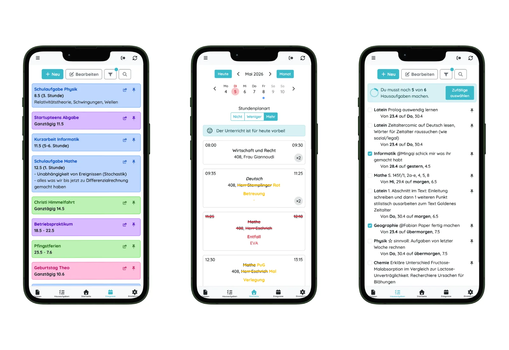
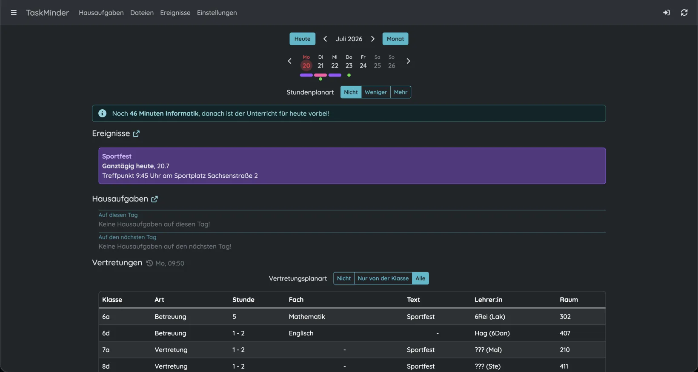
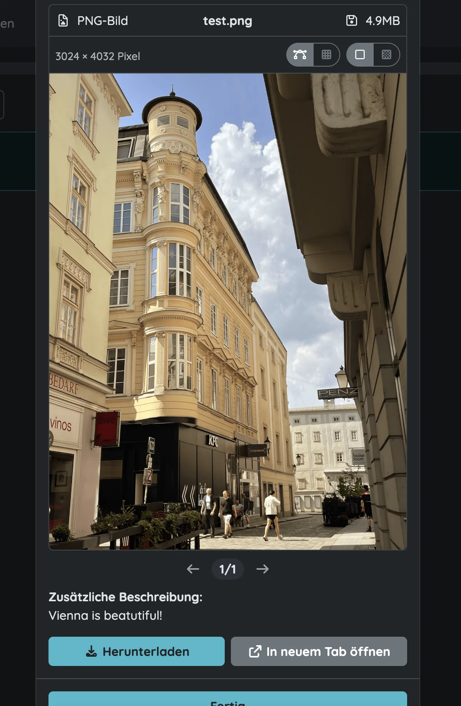
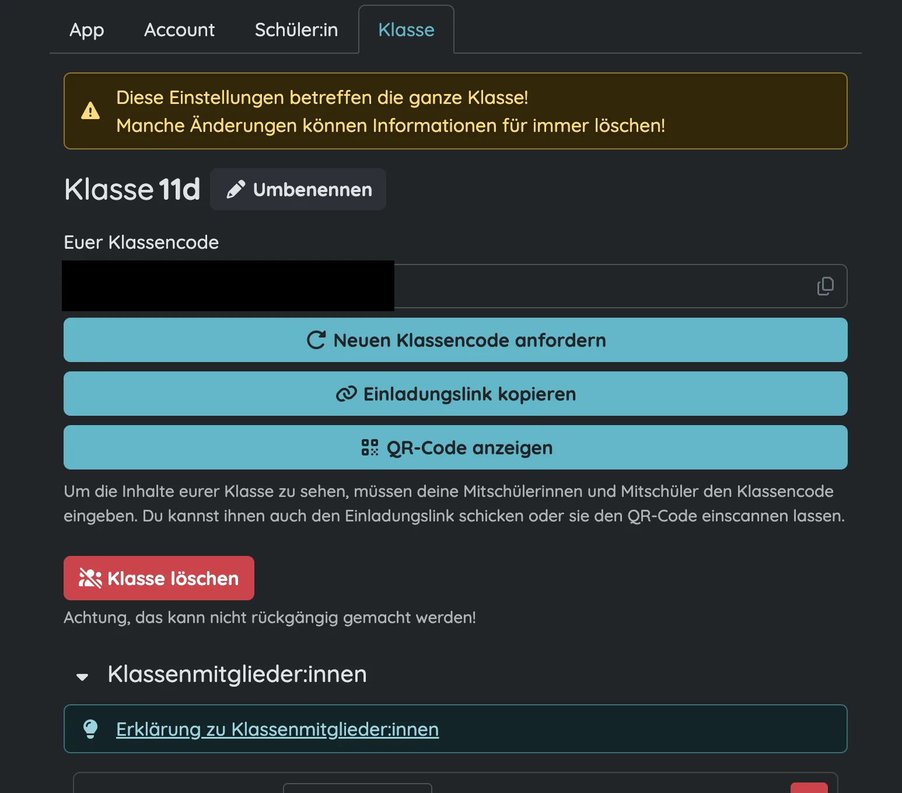
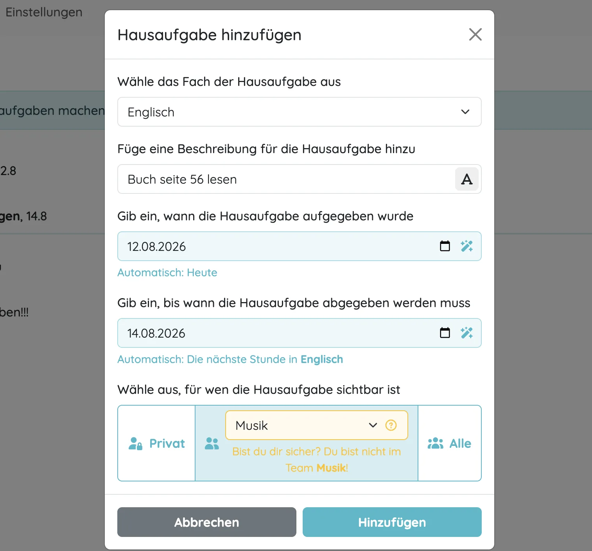
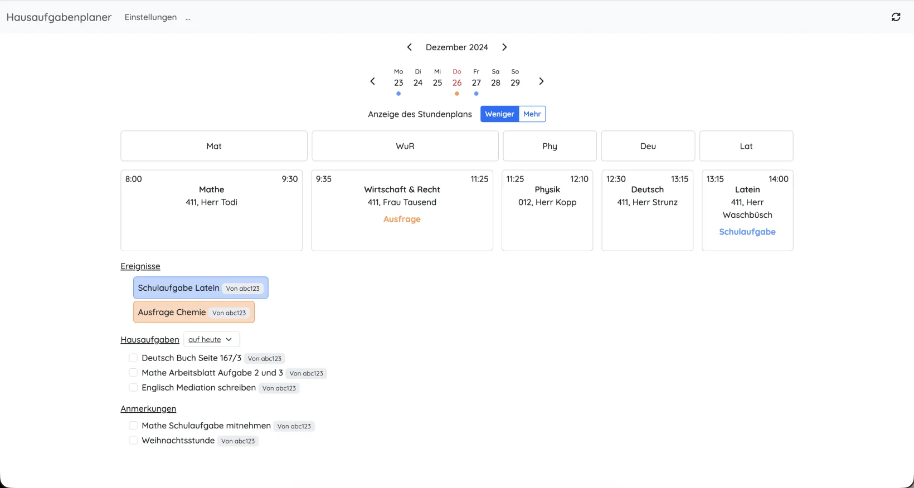
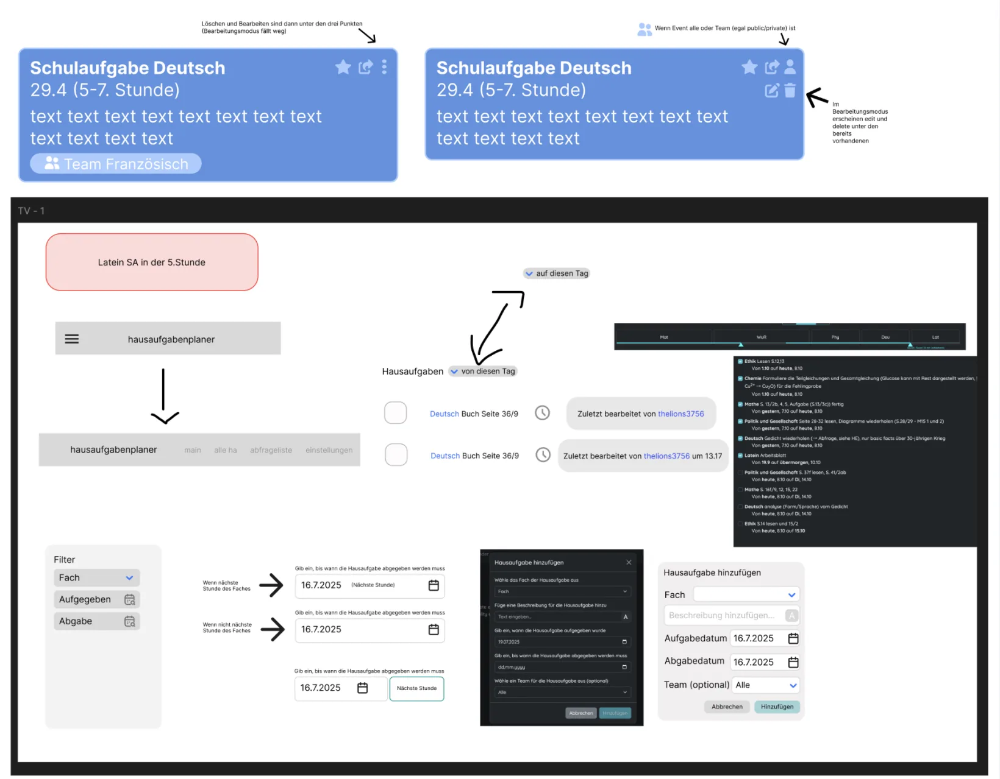
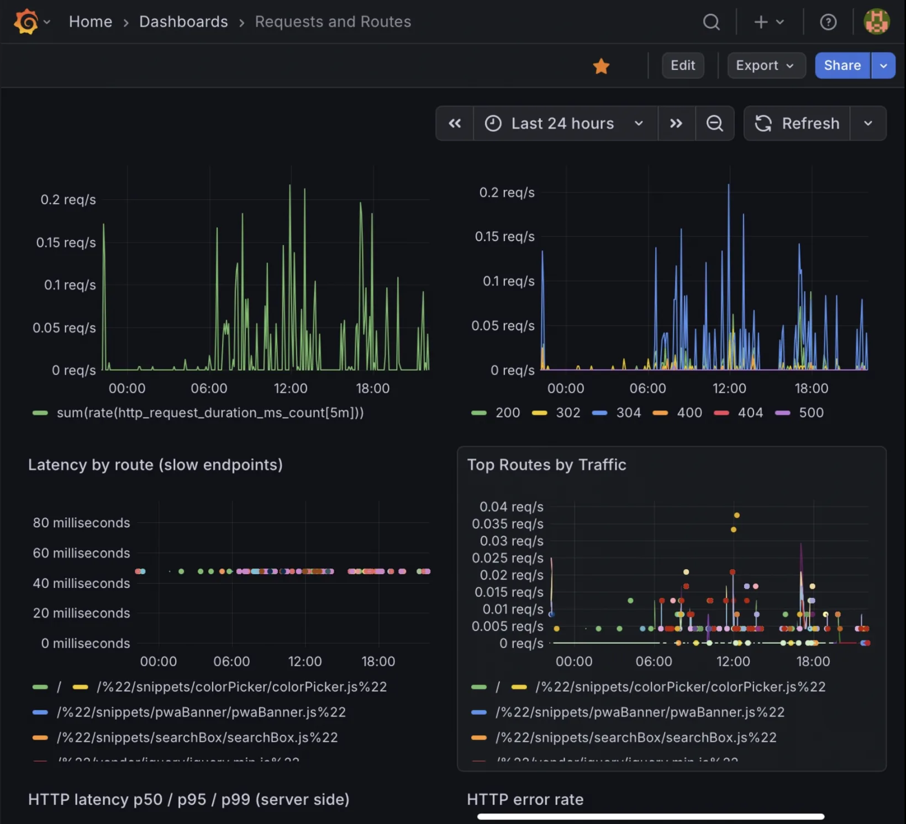

Product / Backend
TaskMinder
My class kept missing homework and exams because the information was everywhere. TaskMinder is our attempt to fix that.
- Role
- Co-founder & team lead · Backend · DevOps
- Timeline
- Dec 2024 - ongoing
- Team
- Two co-founders
- Code
- Open source (AGPLv3) on GitHub

We were not ignoring our homework. Most of the time, we did not know it existed.
In late 2024, almost no homework was getting done in my class. Tasks were passed around verbally. Files were stored in different places (from files hidden in endless Google Drive folders to shared iCloud albums (!?) - yes, that existed 💀), and the date of the next exam was buried in a brief conversation under numerous memes in our WhatsApp class chat. My old homework planner tells the story pretty well: entire weeks from early October onward are simply empty.
I first thought people were simply forgetting to write things down because we often had to change classrooms, leaving little time to write down our assignments properly. But then I looked at my own planner and realised I was doing exactly the same thing. The problem was therefore not a lack of motivation: information was simply too scattered, easy to miss and hard to find again.
So we thought: "What if we had one homework planner for our whole class? Then everybody could see the homework in one place and never have to ask again." We looked at existing solutions first. Untis was the most compelling one, but they only distributed their app to schools, and our school didn't have it. (We had the Untis backend for substitution planning only - more on that later.)
So we built the first version for ourselves from the ground up. I wanted to open one page before school and immediately know what was due, whether anything had changed and where the file I needed was.
That's basically the idea behind TaskMinder: homework, exams, events, class files and substitution plans together.




TaskMinder is built by my co-founder and me in our free time. (We've logged 211 hours of development time in the IDE, tracked by Hackatime, since June 2025 - so probably more than 300 hours since December 2024.) I lead the project, write the backend and keep the deployment running.
One of the trickier parts was bringing in substitution plans. Since DSBMobile (powered by an Untis backend) does not document the API used by its app and web application, we studied how DSBMobile communicates with its Untis-based system (for example, by looking at our router to see which requests our phones make to DSBMobile when we open the app), and we checked our approach with both companies before using it.
The TypeScript backend follows the classic route → (middleware) → controller → service architecture encouraged by Express.js. Middleware handles things such as access control and version control, which reloads the clients' offline cache in the background when a version change breaks it. We use session cookies instead of JWTs because they are easier to handle and we do not need their added complexity. Prisma is the ORM we use to communicate with our relational PostgreSQL database, which gives us typed requests. Socket.IO handles real-time WebSocket communication, so when one user adds homework, it is instantly displayed on other clients without reloading. Deployment runs through Docker Compose behind an Nginx reverse proxy.
Our early versions were quite rough, with pages repeatedly reloading or flashing (or the infamous timezone issues that seem to appear in every software development project), but that was useful. We could put them in front of classmates, watch where they got stuck and change things quickly. To be honest, I learned more from those conversations than I would have from polishing the first version in private.


We wanted people to be able to see what we had actually built and to provide more transparency (because school data is sensitive), so we made TaskMinder completely open source (AGPLv3). The code is public on GitHub: anyone can inspect it, report a problem or build on our work. It also lets me show the technical side of the project, including the imperfect parts and the decisions we later revisited (like including node_modules in Git - what was I actually thinking? 😂).
Explore the source codeTaskMinder started to feel real when it became useful to people outside our two-person team. More than 80 people now use it on a typical day. Reaching the national top four in the Apps & Platforms category of the StartupTeens Challenge was exciting, but honestly, seeing people come back to the product each day means a lot more to me.
